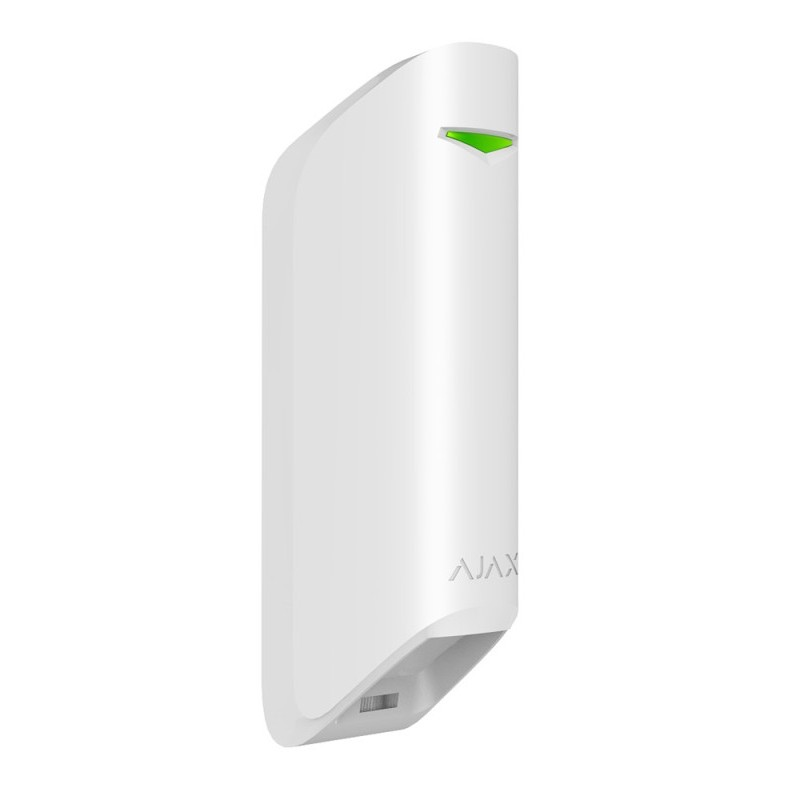

Датчик руху з вузьким кутом огляду Ajax MotionProtect Curtain White.


❮
❯
Бездротовий ІЧ-датчик руху типу «штора» Ajax MotionProtect Curtain Jeweller призначений для захисту віконних і дверних прорізів від проникнення. Пристрій створює невидиму вертикальну завісу завдяки вузькому горизонтальному куту виявлення 6° та широкому вертикальному куту 90°. Оснащений двома інфрачервоними сенсорами з дальністю виявлення до 15 метрів та інтелектуальною кореляційною обробкою сигналу для захисту від хибних спрацювань.
Основні характеристики:
Основні характеристики:
- 2 інфрачервоні (ІЧ) сенсори для точного виявлення
- Дальність виявлення руху до 6–15 м (залежить від режиму)
- Кут виявлення: горизонтальний 6°, вертикальний 90° (створює вертикальну завісу)
- Дальність зв'язку з хабом до 1700 м на відкритому просторі
- Швидкість виявлення: від 0,3 до 2 м/с
- Кореляційна обробка сигналу для підвищеної точності виявлення
- Температурна компенсація для роботи від −10°C до +40°C
- Можливість встановлення перевернутим для ігнорування домашніх тварин
- 3 рівні чутливості (налаштовується)
- Автономна робота до 5 років від однієї батареї CR123A
- Клас захисту IP54 (захист від пилу та бризок води)
- Миттєві сповіщення про проникнення
- Чутливі елементи: 2 інфрачервоні (ІЧ) сенсори
- Дальність виявлення: до 6–15 м (без кореляційної обробки, при встановленні на висоті 2,4 м)
- Дальність виявлення: до 6–8 м (з увімкненою кореляційною обробкою)
- Кут виявлення: горизонтальний — 6° (вузька завіса), вертикальний — 90° (висока завіса)
- Швидкість виявлення: від 0,3 до 2 м/с
- 3 рівні чутливості для різних умов встановлення
- Напрямок лінзи датчика має бути перпендикулярним імовірному шляху вторгнення
- Створення невидимої вертикальної завіси для захисту прорізів
- Інтелектуальний алгоритм для підвищення точності виявлення
- Аналіз сигналів від двох ІЧ сенсорів одночасно
- Зменшення кількості хибних спрацювань
- Виявлення тільки при спрацюванні обох сенсорів
- Фільтрація помилкових тривог від побутових факторів
- Можливість увімкнення/вимкнення через застосунок Ajax
- При увімкненні дальність зменшується до 6–8 м, але точність зростає
- Ефективне виявлення руху за температури від −10°C до +40°C
- Автоматичне регулювання чутливості залежно від температури навколишнього середовища
- Стабільна робота при перепадах температури
- Надійне виявлення в літній та зимовий період
- Компенсація впливу температури об'єкта та фону
- Можливість встановлення датчика перевернутим
- При перевернутому встановленні датчик не реагує на домашніх тварин
- Створення захисної завіси у верхній частині прорізу
- Тварини рухаються внизу і не потрапляють в зону виявлення
- Ідеально для будинків з домашніми улюбленцями
- Пропрієтарна бездротова технологія зв'язку Ajax для передавання команд, тривог і подій
- Дальність зв'язку: до 1700 м (між пристроєм і хабом або ретранслятором за відсутності перешкод)
- Двосторонній зв'язок з хабом
- Блокове шифрування з плаваючим ключем
- Передовий захист від саботажу
- Миттєві сповіщення про події
- Дистанційне керування та налаштування в застосунках Ajax
- Радіочастотний гопінг для запобігання радіозавадам і глушінню
- Діапазони радіочастот: 866,0–866,5 МГц, 868,0–868,6 МГц, 868,7–869,2 МГц, 905,0–926,5 МГц, 915,85–926,5 МГц, 921,0–922,0 МГц (залежить від регіону)
- Максимальна ефективна випромінювана потужність (ERP): до 20 мВт
- Автоматичне регулювання потужності для зниження енергоспоживання та радіозавад
- Модуляція радіосигналу: GFSK
- Тривога тампера при спробі відірвати датчик від поверхні або зняти його з кріпильної панелі
- Захист від підміни — автентифікація пристрою
- Виявлення втрати зв'язку від 36 секунд (залежить від налаштувань Jeweller або Jeweller/Fibra)
- Захист від радіозавад та глушіння через радіочастотний гопінг
- Сповіщення про низький заряд батареї
- Батарея: 1 × CR123A тип C (попередньо встановлена)
- Розрахунковий строк роботи від батареї: до 5 років
- Діапазон робочої напруги: 2,1–3,3 В⎓
- Номінальна робоча напруга: 3 В⎓
- Споживання струму в стані спокою: 41 мкА
- Максимальний струм споживання: 60,4 мА
- Повна ємність батареї: 1600 мА·год
- Напруга низького заряду батареї: 2,5 В⎓
- Напруга відновлення низького заряду: 2,7 В⎓
- Напруга відпрацьованої батареї: 2,1 В⎓ (пристрій вимикається)
- Ємність відпрацьованої батареї: 300 мА·год
- Виробник батареї: Huiderui
- Розміри датчика: 134 × 44 × 34 мм
- Розміри з кронштейном: 134 × 52 × 41 мм
- Вага: 118 г
- Діапазон робочих температур: від −10°C до +40°C
- Допустима вологість: до 75%
- Клас захисту: IP54 (захист від пилу та бризок води з будь-якого напрямку)
- Кольори: чорний, білий
- Призначений лише для встановлення в приміщенні
- Рекомендована висота встановлення: 2,4 м
- Встановлюйте збоку від віконного або дверного прорізу
- Напрямок лінзи датчика має бути перпендикулярним імовірному шляху вторгнення
- Створюйте вертикальну «завісу» для покриття всієї висоти прорізу
- Встановлюйте перевернутим при наявності домашніх тварин
- Ідеально підходить для захисту вікон, балконних дверей, французьких вікон
- Можна використовувати для дверних прорізів, коридорів, вузьких проходів
- Уникайте встановлення біля джерел тепла (батареї, кондиціонери)
- Не встановлюйте під прямими сонячними променями
- Пристрій призначений лише для встановлення в приміщенні
- Використовуйте комплектний кронштейн для точного кута нахилу
- Захист віконних прорізів у житлових будинках
- Контроль балконних і терасних дверей
- Захист французьких вікон і панорамних склінь
- Моніторинг вхідних дверей у офісах
- Захист вітрин магазинів від розбиття
- Контроль доступу через критичні прорізи
- Захист завантажувальних дверей на складах
- Моніторинг пожежних виходів
- Контроль воріт гаражів та паркінгів
- Захист вікон музеїв та виставкових залів
- ✅ Висока дальність зв'язку — до 1700 м
- ✅ Вузький горизонтальний кут 6° — точна «завіса»
- ✅ Широкий вертикальний кут 90° — покриття всієї висоти
- ✅ Два ІЧ сенсори для підвищеної надійності
- ✅ Кореляційна обробка сигналу — мінімум хибних спрацювань
- ✅ Можливість перевернутого встановлення — ігнорування тварин
- ✅ Температурна компенсація для точного виявлення
- ✅ До 5 років автономної роботи
- ✅ IP54 — захист від пилу та води
- ✅ Дистанційне налаштування через застосунок Ajax
- ✅ 3 рівні чутливості
- ✅ Захист від радіозавад та глушіння
- Створює вузьку вертикальну «завісу» замість широкої зони покриття
- Призначений для захисту конкретних прорізів (вікна, двері)
- Можна встановлювати перевернутим для ігнорування тварин
- IP54 — вищий рівень захисту (звичайний MotionProtect — IP50)
- Два ІЧ сенсори замість одного
- Кореляційна обробка сигналу для підвищеної точності
- Менша дальність виявлення (до 15 м замість 12 м), але вища точність
- Комплектний кронштейн для точного позиціонування
- Без кореляційної обробки: дальність до 6–15 м, швидше реагування, більше покриття
- З кореляційною обробкою: дальність до 6–8 м, менше хибних спрацювань, вища точність
- Вибір режиму налаштовується через застосунок Ajax
- Кореляційна обробка рекомендована для складних умов (багато перешкод, тварини)
- Увімкнення/вимкнення кореляційної обробки сигналу
- Регулювання чутливості датчика (3 рівні)
- Тестування покриття зони виявлення
- Налаштування сповіщень про тривоги та події
- Моніторинг заряду батареї
- Перевірка рівня сигналу Jeweller
- Дистанційне тестування роботи датчика
- Перегляд історії подій
- Налаштування затримок на вхід/вихід
- Захист вікон першого поверху від злому
- Контроль проникнення через балконні двері
- Моніторинг панорамних вікон у приватних будинках
- Захист пожежних виходів від несанкціонованого відкриття
- Виявлення розбиття вітрин магазинів
- Контроль відкриття воріт гаражів
- Захист критичних зон доступу у банках
- Моніторинг завантажувальних дверей на складах
- Захист прорізів при наявності домашніх тварин (перевернуте встановлення)
- Встановіть датчик перевернутим (лінза вниз)
- Зона виявлення буде у верхній частині прорізу
- Тварини рухаються внизу і не спрацьовують датчик
- Людина при проникненні все одно потрапляє в зону виявлення
- ✅ Ефективний захист без хибних тривог від тварин
- MotionProtect Curtain Jeweller
- Кріпильна панель SmartBracket
- Кронштейн для точного позиціонування
- Батарея CR123A (попередньо встановлена)
- Монтажний комплект
- Коротка інструкція
- Працює з усіма хабами Ajax (Hub, Hub 2, Hub Plus, Hub Hybrid)
- Підтримка ретрансляторів сигналу (ReX, ReX 2)
- Інтеграція з застосунками Ajax (iOS, Android, macOS, Windows)
- Підключення до пультів централізованого спостереження (ПЦС)
- Підтримка професійного режиму для інсталяторів (PRO)
- Точний захист конкретних прорізів
- Ідеально для вікон і дверей
- IP54 — можна встановлювати біля вікон (бризки дощу)
- Працює з домашніми тваринами
- Швидке виявлення проникнення
- Тривалий термін роботи від батареї
- Дистанційне керування через додаток
- Надійний захист від саботажу
2600.00 грн